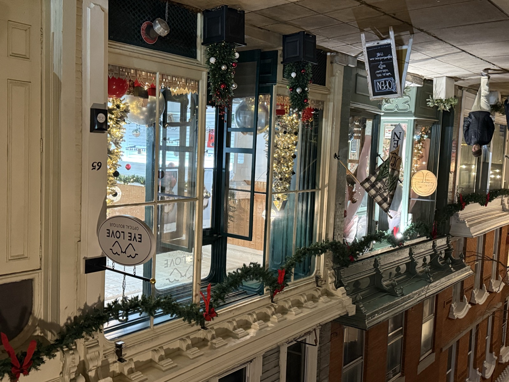
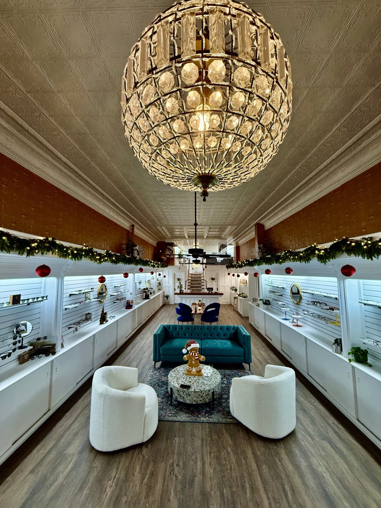
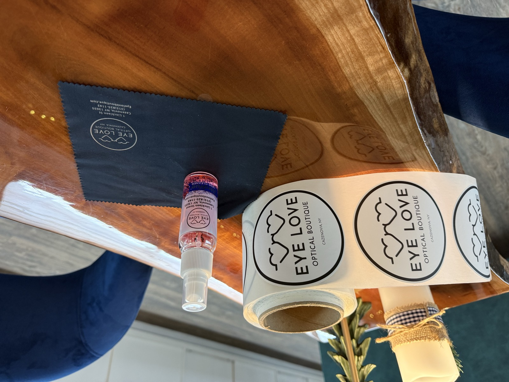
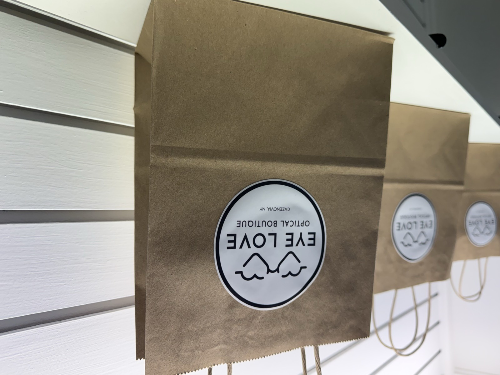

How It Works
Can I get an exam here? Do you take insurance? Can I just bring my prescription? Good questions. Here's what to expect at Eye Love, and why it's unlike anywhere you've ever bought glasses.

1. Step inside and fall in love
Our collection is hand-selected from the finest independent eyewear houses in the world. Handcrafted frames, made by artisans who obsess over every hinge, finish and curve. You won't find them at the mall, eye doctor's office, or big box store, and you certainly won't see them on everyone else.
2. Find the one
This is a true boutique experience. Our opticians and stylists take the time to understand your face, your style and the way you live, then guide you to the pair that feels unmistakably you. No rush, no pressure. Just the joy of finding incredible glasses you'll love.

3. Bring your prescription
Bring it with you, or simply tell us who your eye doctor is and we'll contact their office for you. Then we craft it into lenses from the world's leading lens makers, precisely measured and fit by our New York State-licensed opticians to the way you see. Then we finish them with the very best anti-reflective, Transitions® and specialty coatings, so your vision is every bit as exceptional as your frames.
Need an eye exam? We'll connect you with an incredible optometrist nearby.

4. Insurance, made easy
We don't bill insurance directly. Instead, we hand you a detailed, itemized receipt that makes submitting for reimbursement quick and simple.
5. Love them for years
Ask about our various warranties and free adjustments for life! Once you're part of the Eye Love family, we're here whenever you need us.

Stop in or book an appointment, and experience the Eye Love difference for yourself.
FAQ
Are you an eye doctor?
No, we're an optical boutique. Our New York State-licensed opticians fill your prescription and fit your frames. Need an exam? We'd be delighted to recommend an excellent local optometrist.
Can I just bring in my prescription?
Absolutely. Bring it in, or just tell us who your eye doctor is and we'll reach out to their office for it. No awkward calls, no chasing paperwork. We'll take it from there.
Do you take insurance?
We don't bill insurance directly. You'll get a detailed, itemized receipt to submit for reimbursement.
What brands do you carry?
Only the world's best: Bevel, Face à Face Paris, Etnia Barcelona and more, each hand-selected for its craftsmanship, design and fit. Stop in to see what's new.
Do you carry kids' frames?
Yes. We carry frames for kids, fit with the same care as every adult pair.
Do you sell reading glasses?
Yes, we carry readers, so you can look just as good up close.
What lens options do you have?
Only the best. Premium lenses from the world's top manufacturers, finished with top-tier anti-reflective, Transitions® and specialty coatings.
Do I need an appointment?
Walk-ins are always welcome. Book an appointment for a one-on-one session with a stylist's full attention.
What if my glasses need adjusting?
Adjustments are free for life. Just stop by.
How long until my glasses are ready?
Most glasses are ready in about 5 to 7 business days. We'll let you know as soon as yours are in.
Where are you, and when are you open?
65 Albany Street, Cazenovia, NY.
Tuesday through Friday, 10 am to 5 pm. Saturdays by appointment only.